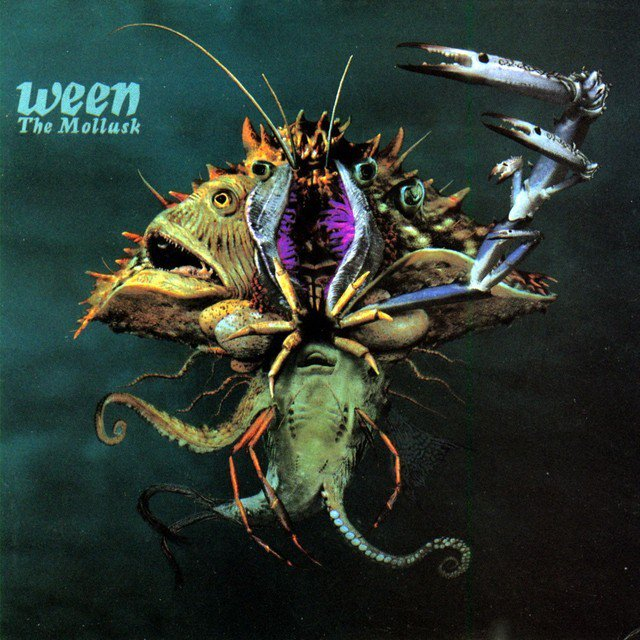
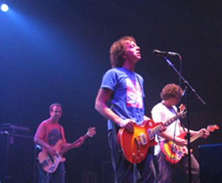

Discografía
Lanzamientos independientes:
- The Crucial Squeegie Lip (1986)
- Axis: Bold As Boognish (1987)
- Erica Peterson's Flaming Crib Death (1987)
- The Live Brain Wedgie/WAD (1988)
- Prime 5 (1989)
Álbumes de estudio
- GodWeenSatan: The Oneness (1990)
- The Pod (1991)
- Pure Guava (1992)
- Chocolate and Cheese (1994)
- 12 Golden Country Greats (1996)
- The Mollusk (1997)
- Craters of the Sac (1999)
- White Pepper (2000)
- Quebec (2003)
- Shinola, Vol. 1 (2005)
- La Cucaracha (2007)
Álbumes en vivo
- Paintin' the Town Brown: Ween Live 1990-1998 (1999)
- Live In Toronto Canada (2001)
- Live at Stubb's 7/2000 (2002)
- All Request Live (2003)
- Live In Chicago (2004)
- Cat's Cradle in Chapel Hill, NC, 12/9/92 (2008)